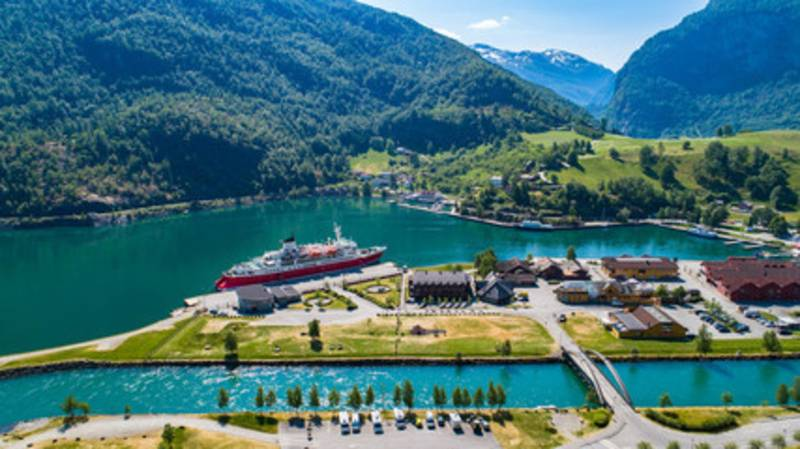
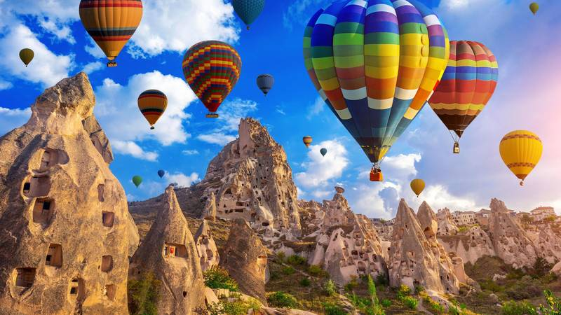
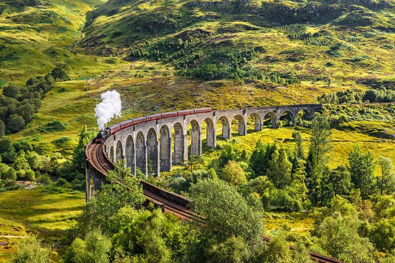
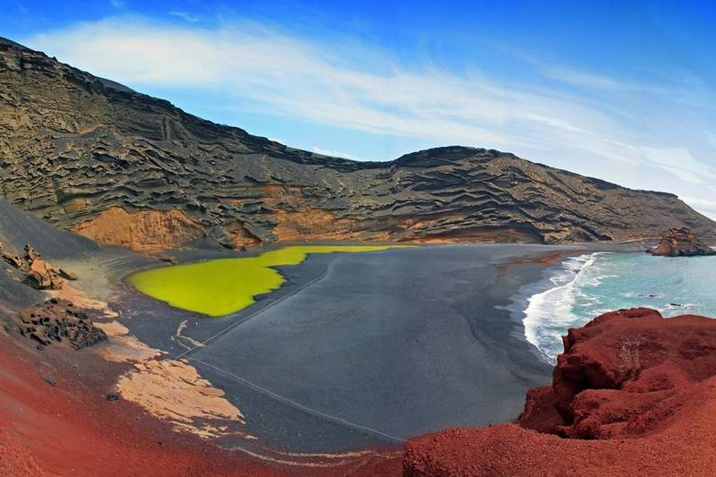
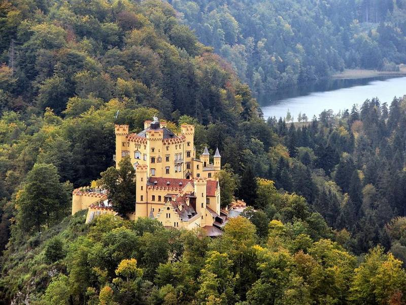
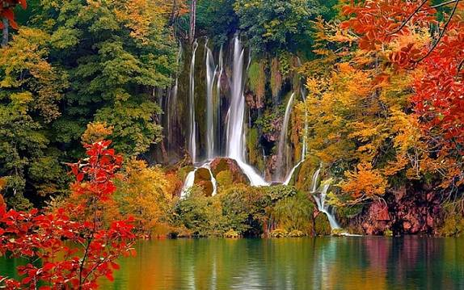
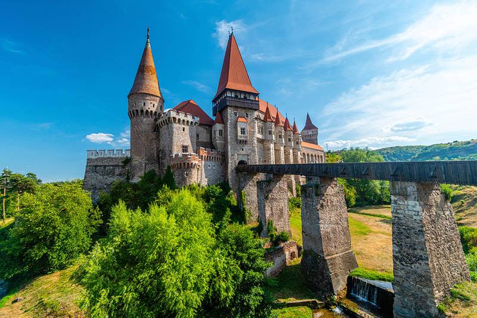

Идеи для будущих поездок: аэропорт, нужна ли машина, сколько дней и когда лучше ехать. Цены ориентировочные.
Когда ехать:

🚂 Flåm Railway + фьорды
Норвегия
Идеальный маршрут: поезд сквозь водопады → паром по фьорду → снова поезд. Живописный трип, где дорога — уже путешествие. Всё просто, красиво и медленно.
✈️ Аэропорт
Bergen (BGO), прямой из Барсы
🚗 Авто
не нужно
🕓 Сколько
2–3 дня
📅 Когда
июнь–сентябрь
💰 Цена
€860 за двоих

🎈 Каппадокия
Турция
Ты просыпаешься в пещерном отеле, выходишь босиком на тёплый камень, а в небе — десятки шаров, плывущих над розовыми каньонами.
✈️ Аэропорт
Kayseri (ASR), нет прямых
🚗 Авто
не обязательно
🕓 Сколько
3–4 дня
📅 Когда
апрель–май, сентябрь–октябрь
💰 Цена
€750 за двоих (из Москвы)
💡 выбери отель в Göreme или чуть вне — чтобы вид на шары был прямо с балкона, а не из толпы. И если лететь — бронируй шар заранее (и только на рассвет!)
🌋 Исландия (юг + запад)
Исландия
Природное безумие без напряга: водопады, чёрные пляжи, гейзеры. Всё — на машине с остановками, маршрут в стиле "road trip light".
✈️ Аэропорт
Reykjavík–Keflavík (KEF), прямой из Валенсии, Мадрид дешевле
Тропический вайб без жары. Природа, океан, термальные источники, вулканические пейзажи.
✈️ Аэропорт
Ponta Delgada (PDL), прямой из Мадрида
🚗 Авто
желательно
🕓 Сколько
5–6 дней
📅 Когда
май–сентябрь
💰 Цена
€1,400 за двоих

🏴 Северная Шотландия + поезд Джейкобита
Шотландия
Гарри Поттер вайб, но без туристической мишуры. Поезд по виадуку, маяки на скалах, шотландские коттеджи, олени в тумане. Всё как будто с фильтра VSCO «ностальгия».
✈️ Аэропорт
Inverness (INV), нет прямых
🚗 Авто
желательно
🕓 Сколько
3–4 дня
📅 Когда
май–сентябрь
💰 Цена
€1,200 за двоих

🌋 Лансароте, Канары
Испания
Лава, кратеры, белые домики и космос под ногами. Виноград растёт в кратерах, а дороги выглядят как линии в sci-fi фильме. Сухой климат, океан, инопланетный вайб.
✈️ Аэропорт
Lanzarote (ACE)
🚗 Авто
желательно
🕓 Сколько
4–5 дней
📅 Когда
январь–март
💰 Цена
€1,150 за двоих

🚂 Кёльн и живописная дорога вдоль Рейна
Германия
Готический собор, река Рейн, старая архитектура и атмосферные деревушки. Главная цель поездки это поезде вдоль Рейна: от Кобленца до Майнца — замки, виноградники, старинные станции.
✈️ Аэропорт
Köln/Bonn (CGN)
🚗 Авто
не нужно (поезд вдоль Рейна — must)
🕓 Сколько
2–3 дня
📅 Когда
май–октябрь
💰 Цена
€780 за двоих
❄️ Glacier Express
Швейцария
Один из самых живописных поездов в мире. 8 часов красоты: виадуки, ледники, долины, деревушки, озёра — всё как будто снято на пленку. Можно проехать весь маршрут или только часть. Начать из Церматта (рядом с Маттерхорном) и закончить в Санкт-Морице или наоборот.
✈️ Аэропорт
Zurich (ZRH) или Geneva (GVA)
🚗 Авто
не нужно (весь маршрут — по железной дороге)
🕓 Сколько
2–3 дня (лучше с ночёвками в Zermatt / Chur)
📅 Когда
февраль–март или сентябрь
💰 Цена
€1,400 за двоих
🌸 Япония (Киото, Осака, Нара)
Япония
Культура, порядок, эстетика и кайф во всём — от минимализма до чаепитий. Киото для дзена, Осака для уличной еды, Нара для оленьей нежности.
✈️ Аэропорт
Kansai International (KIX)
🚗 Авто
не нужно (всё на поездах идеально)
🕓 Сколько
7–10 дней
📅 Когда
апрель (сакура)
💰 Цена
€3,200 за двоих (из Москвы)
💡 в районе Кансая есть парки, где ночью загораются тысячи светлячков
🌋 Камчатка
Россия
Дикая природа, вулканы, медведи, вертолёты. Если хочется почувствовать, что ты на другой планете — тебе сюда.
✈️ Аэропорт
Петропавловск-Камчатский (PKC)
🚗 Авто
с гидом или группой (логистика сложная)
🕓 Сколько
7–9 дней
📅 Когда
июль–сентябрь
💰 Цена
€3,400 за двоих (из Москвы)

🍁 Плитвицкие озёра
Хорватия
В октябре это настоящее визуальное заклинание: туман над водой, шорох листьев под ногами, каскады воды сквозь золотой лес. Ты не идёшь по маршруту — ты будто внутри анимационного фильма, где время замирает.
✈️ Аэропорт
Загреб (ZAG)
🚗 Авто
желательно (удобнее добираться и уехать до/после парка)
🕓 Сколько
2 дня
📅 Когда
первая половина октября (лучше будни)
💰 Цена
€620 за двоих
❄️ Байкал
Россия
Лёд, прозрачность, глубина — Байкал как космос. Зимой — хруст, торосы, УАЗики.
Горы, степи, бирюзовые реки, хребты и шаманская энергия. Идеально для перезагрузки и тишины. Можно комбинировать авто-поездку с сплавами и медитацией на вершине.
✈️ Аэропорт
Горно-Алтайск (RGK)
🚗 Авто
обязательно
🕓 Сколько
6–8 дней
📅 Когда
июнь–сентябрь
💰 Цена
€2,200 за двоих (из Москвы)
🏺 Пирамиды Гиза
Египет
Ощущение времени: ты стоишь перед 4 000‑летней архитектурой, смотришь на Сфинкса и понимаешь — это не “популярное место”, это — легенда. Можно прогуляться по пустыне, посмотреть закат между камней.
Горные деревушки, горячие источники, уединение. Без пафоса, но с вайбом.
✈️ Аэропорт
Toulouse (TLS)
🚗 Авто
желательно
🕓 Сколько
4–5 дней
📅 Когда
май–июнь, сентябрь
💰 Цена
€980 за двоих
🌊 Амальфитанское побережье + острова
Италия
Равелло, Прайано, Минори — без толп. Прочида или Искья — камерно, красиво.
✈️ Аэропорт
Naples (NAP)
🚗 Авто
желательно
🕓 Сколько
4–5 дней
📅 Когда
май–июнь, сентябрь–октябрь
💰 Цена
€1,250 за двоих
🏘️ Кольмар и Эльзас
Франция
Французская сказка. Особенно красиво в декабре — рождественская атмосфера, уют, вино, огоньки.
✈️ Аэропорт
Strasbourg (SXB)
🚗 Авто
не обязательно
🕓 Сколько
2–3 дня
📅 Когда
декабрь (рождество) или весна
💰 Цена
€780 за двоих

🧛 Трансильвания
Румыния
Про Дракулу и про холмы в утренней дымке, лошадиные повозки, немецкие деревни без туристов, хлеб из печи. Эстетика без фильтров. Очень живая Восточная Европа.
✈️ Аэропорт
Sibiu (SBZ) или Cluj (CLJ)
🚗 Авто
желательно
🕓 Сколько
4–5 дней
📅 Когда
сентябрь–октябрь
💰 Цена
€890 за двоих
💡 Любляна + озеро Блед
Словения
Чисто, спокойно, уютно. Природа рядом, город — камерный и зелёный.
✈️ Аэропорт
Ljubljana (LJU)
🚗 Авто
не нужно (можно взять на 1 день для озера)
🕓 Сколько
2–3 дня
📅 Когда
апрель–сентябрь
💰 Цена
€720 за двоих
🌅 Гранада или Кадис
Испания
Если Испания приелась, это будет новый взгляд: южный вайб, арабское наследие, еда, море.